代理事项
功能描述：可接收、办理其他用户出差或请假时间转交给用户的流程待办任务事项。
界面展示：
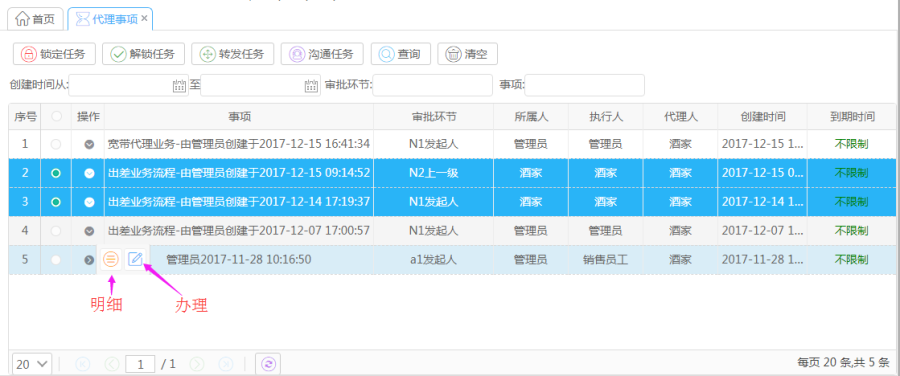
【说明】
锁定任务：锁定任务只有用户自己可以办理
解锁任务：解锁任务其他用户可以接手
转发用户：把任务转发给其他用户
沟通任务：以发消息形式与其他用户沟通任务
查询：根据条件查询任务
清空：清空查询条件及查询结果
明细：查看任务信息
办理：办理任务
操作指导：
【锁定任务】
操作：选择任务，点击锁定任务。（若锁定不成功，需要先解锁任务）
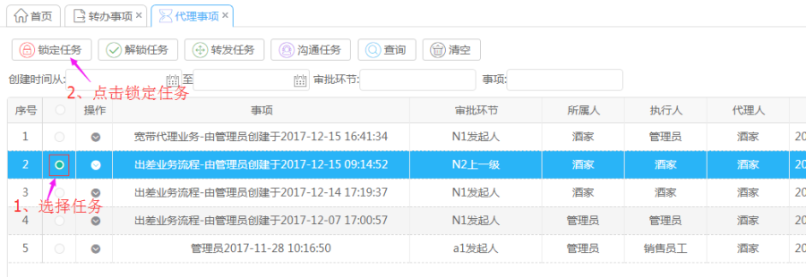
【解锁任务】
操作：选择任务，点击解锁任务，解锁任务成功执行人显示“无”。
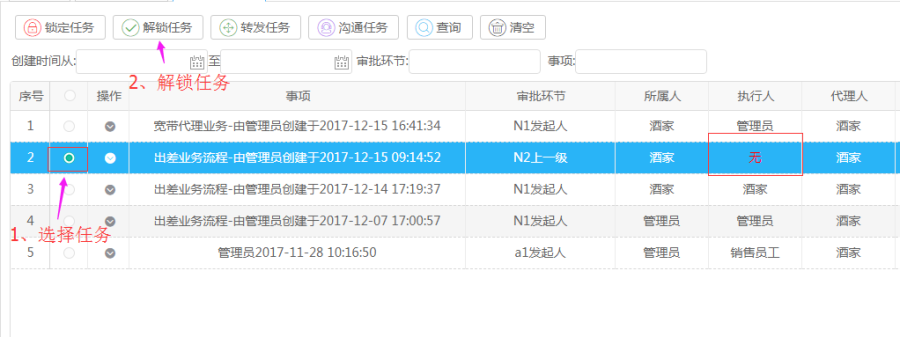
【转发任务】
操作：选择任务，点击转发任务按键，选择转发人、通知消息类型，点击转发任务。
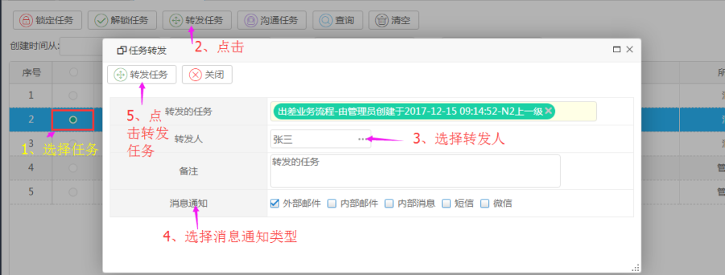
【沟通任务】
操作：选择沟通的任务，点击沟通任务按键，选择沟通人，输入沟通内容，点击发送。
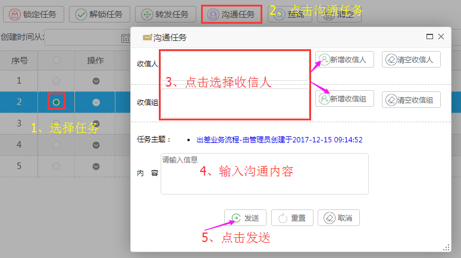
【办理】
操作：输入处理意见，点击提交。
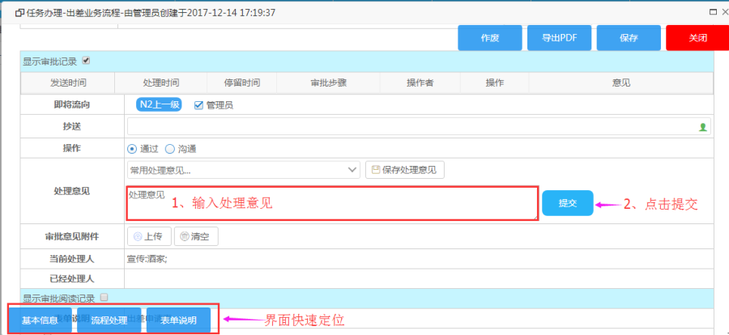
【说明】
作废：作废处理流程
导出PDF：导出流程信息PDF文件
保存：暂存流程数据
关闭：关闭界面
【明细】
可以查看任务基本信息，流程示意图，业务数据，流程变量，流程流转记录；可以进行沟通任务，编辑任务所属人、执行人等操作。
[任务基本信息]
查看任务基本信息
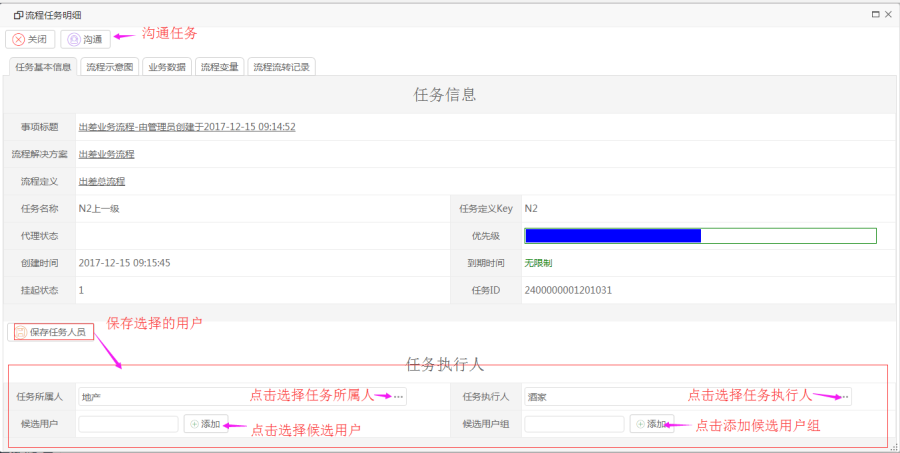
[流程示意图]
查看流程图
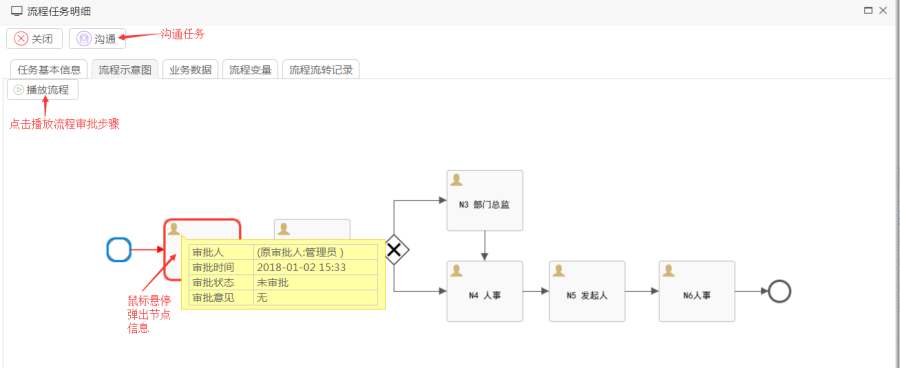
[流程变量]
查看流程变量
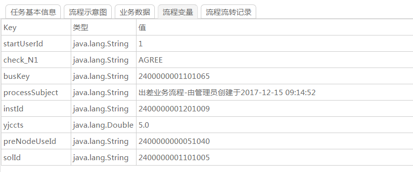
[流程流转记录]
查看流程审批记录
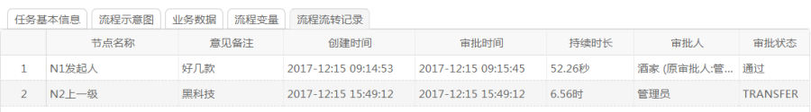
【查询】
操作：输入查询条件，点击查询。
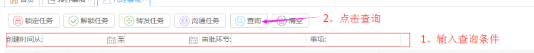